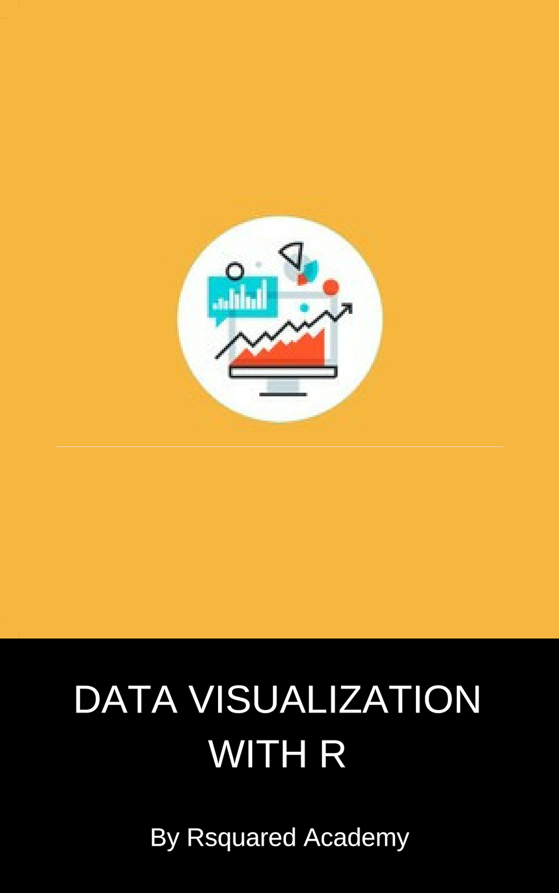

Data Visualization with R
Base Graphics
A free, modern book on data visualisation with base R: zero dependencies, publication-ready output, and a measured case for why base graphics still belongs in your toolkit.
Preface

This work is licensed under a Creative Commons Attribution-NonCommercial-ShareAlike 4.0 International License.
This book requires R 4.1 or later.
Software information
The R session information when compiling this book is shown below:
sessionInfo()R version 4.5.3 (2026-03-11)
Platform: x86_64-pc-linux-gnu
Running under: Ubuntu 24.04.5 LTS
Matrix products: default
BLAS: /usr/lib/x86_64-linux-gnu/openblas-pthread/libblas.so.3
LAPACK: /usr/lib/x86_64-linux-gnu/openblas-pthread/libopenblasp-r0.3.26.so; LAPACK version 3.12.0
locale:
[1] LC_CTYPE=C.UTF-8 LC_NUMERIC=C LC_TIME=C.UTF-8
[4] LC_COLLATE=C.UTF-8 LC_MONETARY=C.UTF-8 LC_MESSAGES=C.UTF-8
[7] LC_PAPER=C.UTF-8 LC_NAME=C LC_ADDRESS=C
[10] LC_TELEPHONE=C LC_MEASUREMENT=C.UTF-8 LC_IDENTIFICATION=C
time zone: UTC
tzcode source: system (glibc)
attached base packages:
[1] stats graphics grDevices utils datasets methods base
loaded via a namespace (and not attached):
[1] compiler_4.5.3 fastmap_1.2.0 cli_3.6.6 tools_4.5.3
[5] htmltools_0.5.9 yaml_2.3.12 rmarkdown_2.32 knitr_1.52
[9] jsonlite_2.0.0 xfun_0.61 digest_0.6.39 rlang_1.3.0
[13] evaluate_1.0.5 We do not add prompts (> and +) to R source code in this book, and we comment out the text output with two hashes ## by default, as you can see from the R session information above. This is for your convenience when you want to copy and run the code (the text output will be ignored since it is commented out). Package names are in bold text (e.g., rmarkdown), and function names are followed by parentheses (e.g., knitr::knit()). The double-colon operator :: means accessing an object from a package.
How to cite this book
If this book is useful to your work, please cite it. A ready-made BibTeX entry is in citation.bib and is reproduced below.
@misc{vizbase2026,
author = {Aravind Hebbali},
title = {Data Visualization with R: Base Graphics},
year = {2026},
version = {1.0},
publisher = {Rsquared Academy},
doi = {10.5281/zenodo.23138733},
url = {https://viz-base.rsquaredacademy.com},
note = {Version 1.0. Source: https://github.com/rsquaredacademy-publications/viz-base}
}The DOI is the Zenodo version DOI for v1.0.0, so this citation keeps resolving to the edition you are reading even after a later release. If you would rather your citation track the current edition, use the concept DOI
10.5281/zenodo.23138732instead — it always resolves to the latest version.
Corrections
This book is a living document and mistakes will be found. If you find one, please open an issue at rsquaredacademy-publications/viz-base.
Every measurement quoted in Chapter 1 is regenerable from the scripts in scripts/, so a disputed number is a reproducible question rather than an argument. See the References chapter for the full list.